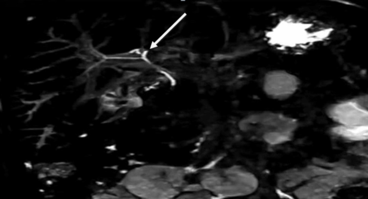

Ficha del catálogo
Colangitis esclerosante primaria
- Sistema
- Digestivo
- Modalidad
- RM
- Región
- Árbol biliar intrahepático y extrahepático
- Dificultad
- Avanzado
Es una enfermedad crónica colestásica caracterizada por inflamación y fibrosis progresivas de los conductos biliares, con estenosis multifocales. Se asocia con frecuencia a la enfermedad inflamatoria intestinal, en especial a la colitis ulcerosa. Evoluciona hacia la cirrosis biliar y conlleva un riesgo aumentado de colangiocarcinoma y de neoplasia colorrectal.
Técnica
La colangiorresonancia es la técnica diagnóstica de referencia y ha desplazado a la colangiografía retrógrada endoscópica, que hoy se reserva para casos con intención terapéutica o para tomar muestras. Se realiza con ayuno y con agente negativo oral si se dispone, y requiere secuencias muy potenciadas en T2 con buena resolución espacial para resolver los conductos periféricos.
Qué observar
- Estenosis cortas y múltiples que alternan con segmentos dilatados, con aspecto arrosariado
- Irregularidad y afilamiento de los conductos periféricos, que da la imagen de árbol podado
- Distribución de la enfermedad, que puede ser intrahepática, extrahepática o mixta
- Engrosamiento parietal con realce de los conductos afectados
- Signos de hepatopatía crónica con hipertrofia del lóbulo caudado y contorno nodular
- Estenosis dominante, masa o realce nodular que hagan sospechar colangiocarcinoma
Hallazgos
El árbol biliar muestra un calibre irregular con estrechamientos breves separados por segmentos de calibre conservado o dilatado, sin una obstrucción única que explique el cuadro. Los conductos periféricos se ven escasos y afilados. Con el tiempo aparecen fibrosis periportal, atrofia de segmentos, hipertrofia del caudado y signos de hipertensión portal. La vesícula puede engrosarse y también se describe una mayor frecuencia de litiasis y de pólipos vesiculares en estos pacientes.
Perlas
El seguimiento vigila sobre todo la aparición de una estenosis dominante nueva, de una masa o de un realce nodular, porque el colangiocarcinoma es la complicación más grave y puede ser difícil de distinguir de la propia enfermedad. Un dato de ayuda es que las estenosis inflamatorias suelen ser cortas y simétricas, mientras que la sospecha crece cuando una estenosis es larga, asimétrica, con engrosamiento parietal marcado y con dilatación desproporcionada por encima.
Diagnóstico diferencial
- Colangitis esclerosante secundaria
- Antecedente de cirugía biliar, litiasis de repetición, isquemia o infección, con distribución acorde a la causa.
- Colangiopatía asociada a enfermedad por IgG4
- Engrosamiento parietal concéntrico y liso con afectación pancreática y respuesta al esteroide.
- Colangiocarcinoma
- Estenosis única dominante con masa y realce tardío, y dilatación marcada por encima.
- Colangitis piógena recurrente
- Litos intraductales abundantes con dilatación desproporcionada de conductos centrales y contexto epidemiológico.
- Cirrosis biliar con colestasis de otra causa
- Signos de hepatopatía sin el patrón arrosariado característico del árbol biliar.
Simuladores
- Artefactos de movimiento respiratorio que fragmentan los conductos y simulan estenosis
- Compresión de conductos por nódulos de regeneración en la cirrosis avanzada
- Neumobilia tras esfinterotomía, que interrumpe la señal del conducto
Por modalidad
- RM
- Es el método de referencia diagnóstica y de seguimiento por su detalle del árbol biliar sin ser invasiva
- TC
- Aporta menos detalle ductal pero valora complicaciones, masas y signos de hipertensión portal
- US
- Detecta dilatación segmentaria, engrosamiento parietal y hallazgos vesiculares, con papel de cribado inicial
Protocolo
Colangiorresonancia con secuencias T2 de alta resolución en cortes finos de 2 a 3 mm y bloques gruesos radiales en apnea, T2 con y sin supresión grasa, difusión y T1 dinámico tras gadolinio con fase tardía. La sincronización respiratoria y el uso de agente negativo oral mejoran de forma notable la calidad del mapa ductal.
Clasificación
Errores frecuentes
- Confundir artefactos de movimiento con estenosis reales y sobrediagnosticar la enfermedad
- No comparar con estudios previos y pasar por alto una estenosis dominante nueva
- Olvidar el mayor riesgo de neoplasia biliar y colorrectal al redactar la recomendación de seguimiento

colangitis esclerosante colangiorresonancia arbol podado estenosis arrosariada colitis ulcerosa colangiocarcinoma via biliar